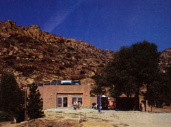
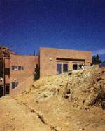
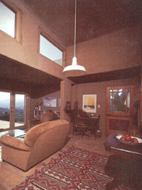
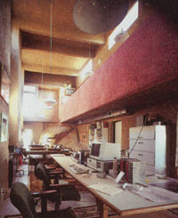

Innovative construction techniques, passive heating and cooling, and photovoltaics add up to. . .
In the July/August 1983 issue of MOTHER, I described a 24-foot trailer, powered by photovoltaic panels, that my husband, Bill, and I were living in while we planned our new home. You may remember that we had no hook-up to the electric company and that we processed our own wastes at the site. In fact, our only link to the public utility umbilical was a freshwater line.
With plentiful solar electricity and a trailer permit (granted when our building plans were approved), we happily inhabited our mobile hilltop roost and experimented with the necessities: an electric composting toilet, various inverters from 12- to 48-volt input, Delco and GNB (better for deep cycling) batteries, and both a solar and a tankless water heater.
At the same time, we also enjoyed the amenities of electrical self-sufficiency: Our appliances included a coffee grinder, an Apple computer, a Cuisinart, three refrigerators (Norcolds and a Sanyo), a tape deck, and a color television-among others.
As we tested hardware, we took our time refining our house plans. Richard Schoen, a practicing solar architect and professor at the University of California, Los Angeles, helped us come up with a design appropriate to the site and climate and offered valuable advice on how to visually blend our solar panels with our architecture.
Soon after the magazine article appeared, we began the actual construction of our new home. Aside from the jobs done by specialized tradesmen in wiring, plumbing, and heating/ventilation, Bill did most of the work himself-along with the help of inexperienced laborers to speed the process. Because my husband has more than a full-time job to face each day, the house had to be simple and not too time-consuming to build. [EDITOR'S NOTE: For J. W. Yerkes' contributions to the development of photovoltaics, see MOTHER No. 94, page 76.] As it turned out, it met both of these objectives, and we want to share our methods and materials with those of you who'd like to build your own house but suffer similar constraints.
The basic building blocks of our home are 4' X 8' polyurethane foam and wire panels, which are set onto poured concrete footings, clipped together, and sprayed-inside and outwith cement. The tensile (stretching) strength of the steel-wire cage combines with the compressive strength of concrete to produce a very rigid panel, and the polyurethane foam offers just about the highest R-value per inch of thickness of any material available. Spraying cement-a process often known by the trade name Gunite-isn't a doit-yourself project, but knowledgeable contractors can be found anywhere swimming pools are installed. The panels themselves were ordered from two companies: CS&M, formerly of Riverside, California, supplied those for the house, and Covington Technologies of Rialto, California, assembled the units for the courtyard walls and the garage.
All of our panels arrived on one flat-bed truck. Because they're lightweight, unloading them was easy, and they stacked neatly for compact storage. We specified thicker panels for our hot western and cool northern walls, and ordered empty cages to add thickness to the inside of those walls used for thermal mass. A completely concrete-filled cage provides an excellent absorber for the sun's heat in the wintertime and helps to stabilize temperatures between the nighttime lows and daytime highs during the months when we need cooling.
With our supply of panels, cages, connector strips, clips, and a clip gun-all of which were supplied by the manufacturer-and an air compressor borrowed from a neighbor to power the clip gun, we set to work. Though the panels are light enough for one person to handle, their size makes them a bit cumbersome. Consequently, it works best if one person holds a panel in place while another connects it to the foundation and to its neighbors. A connector strip reinforces each joint along its full length. The simple "building block" approach allows the walls to rise very quickly.
Whenever we reached a point where a window or door was to be located, Bill would cut an appropriately sized hole with a circular saw equipped with a carbide blade. After he made the hole for each window, we would examine the view, the relationship of that window to others, and its effect on our privacy. Mistakes could still be corrected easily at that stage. For example, when we found that a worker had cut a couple of windows too low, we simply removed more material at their tops and replaced strips at the bottoms. The patches were then retied with wire (they could also have been clipped).
Only the exterior, metal-clad, door frames (protected with masking tape) were installed before the spraying was done. Other doors and windows, which are wood framed, went in after the concrete application. As we learned later, when trying to fit several windows to rough openings that were a little too small, it's much easier to adjust before the concrete is applied. Better a little too big than too small.
Even before the cement is applied, the panels are very strong. In fact, you can walk on the panels once they're clipped. We even formed our poured-concrete slab floors with them, though we discovered how important it is to protect the floor from debris and overspray of cement while working on the walls. We ended up vacuuming painstakingly, poking the nozzle of an industrial cleaner into every square inch of wire mesh. Covering the floor early in the process would have saved a lot of work.
Strong as the panels are, additional reinforcement is required for doors, balconies, and cantilevered decks. Bill tied No. 4 and 5 reinforcing steel, as appropriate, to the cages to handle these extra stresses.
At this stage, we also cut holes through the walls for plumbing runs. It was time to exercise all available powers of forethought: Though it's possible to drill or saw through concrete after it's set, it's not a pleasant task. And I've vacuumed up just about as much concrete dust as I ever care to. At the same time, the electrician set the conduit for wiring. (Although our house is completely photovoltaically powered, we had it wired to accept standard 110 VAC, so that any future owner would have the option of tying into the utility grid.)
As I mentioned earlier, most Guniteapplication contractors are experienced only in shooting swimming pools. Because of that, we received diverse price quotations on our somewhat unusual job. In the end, we selected the lowest bid and haven't regretted our choice.
The cement is mixed right at the site and shot out under high pressure through a long hose. Just a bit of water is added as the cement reaches the nozzle, and the damp mix adheres to the wall. Any that's of improper consistency simply falls to the floor. Before the cement sets completely, the wall can be smoothed or textured with a float. We worked it to duplicate the rough surface of a handtroweled Mexican wall.
Because our house has three levels-two stories that follow the contours of the hillside and a third level that's a flat roof with a parapetthe Gunite had to be applied in three stages. To begin with, the first-story walls were shot and the slab poured. Then we shored up the secondlevel floor, poured it, and followed by spraying the walls of the second level. Moving upward, we shored up the roof and poured it and finished up by spraying the parapet walls. For the following 21 days, we hosed down the cement and concrete twice a day to allow it to cure slowly and reach its full compressive strength.
My husband installed the double-glazed windows and insulated doors himself. And, because the original rough openings failed to allow for the expansion of the wood frames, Bill ended up enlarging many of the holes with a circular saw and carbide blade. Once the openings were large enough, he fit the windows, shimmed them, and sealed around the edges with a polyurethane foam spray that expands to fit and then hardens.
By this point, we'd been living in our 24-foot trailer for some time. I do recommend this sort of arrangement to owner-builders: With no long commute to the job site, my husband could work until dark or dinner and then quickly shower and relax. But after two and a half years, our cramped quarters had made us eager to move into our new house as soon as possible. We took our first step in that direction by shifting the contents of our rented storage area into the basement-the first lockable space in the house. Then, once our solar panels were on the roof and wired to the batteries in the basement, power surged to the electrical outlets, and we moved the computer of the trailer dinette and into the studio.
We laid ceramic tile at our own pace, and Bill set the plumbing fixtures and mounted the kitchen and bathroom cabinets. Gradually, we furnished the house with a dishwasher, a clothes washer, a propane-fired dryer, and other conveniences. A 1,500-gallon septic tank had been in place since we first occupied the site in the trailer, but we'd hoped not to put it to much use. A New Mullbank toilet in the trailer had composted wastes well for 30 months (we did drain off urine and its ammonia odor to the septic tank), so we were disappointed when the State of California refused our request to use a Clivus Multrum in our new house.
Our independent power source-the sunoffered us a significant advantage at this stage of construction. Because many county building departments hold out the OK for a utility hook-up until they're sure building codes have been met, most folks can't move in until all the details are taken care of. But, since we didn't need to make that connection, we were able to take occupancy much sooner. (Please understand that we had no wish to evade code specifications. For our own protection, we've built a house that's far stronger and safer than the letter of the law requires.)
We've spent almost 18 comfortable months in our house now and can report that it maintains stable temperatures throughout the seasons with little or no auxiliary energy. The well-insulated foam-and-concrete construction wards off hot summer temperatures (our greatest concern), and passive solar input easily keeps us comfortable in the winter. Much of the responsibilty for the consistent comfort levels must go to the 75 tons of cement that lie inside the well-sealed, heavily insulated envelope of our house. This tremendous amount of thermal mass absorbs most airtemperature swings, and keeps a not-too-cool, not-too-hot surface near us at all times.
This sort of high-mass desert architecture depends on adequate ventilation of cool night air to reduce the temperature of the mass that has built up in the hot afternoon. Most of the time, our dry climate brings us cool nights, even after a 100°F day. By opening windows to the evening breezes, we can lower the temperature of the cement in our walls and floors in preparation for another day. In a more humid climate, however, where the nights stay warm and sticky, the strategy would not be nearly as effective.
As added protection, each of the windows on the east side of the house has an "eyebrow" to eclipse the intense morning sun, and we have a walled courtyard with trees on that side of the house for a cool afternoon gathering place. A southern courtyard is a pleasant spot in the late afternoon when the winds come up, and in the evening it offers a view of the twinkling lights from the city below. (A trellis over the southern courtyard-to limit direct and indirect radiation-is an unfinished part of our plan at this point.) The west side of the house, which bears the brunt of the intense afternoon heat of summer, has no windows.
Though our bunker-solid construction has yet to be tested by earthquake or fire, the summer of 1984 was said to be the hottest in 27 years. The 100°-plus temperatures, with nights that just didn't get as cool as they're supposed to, led us to purchase a thrifty one-kilowatt Friedrich air conditioner, which we put in the warmest area of the house: the southern living room.
In the winter, the sun's warming rats stream through the southern windows, the doubleglazed French doors, and a clerestory onto the massive walls and red clay tile floors, where the heat is absorbed. At night, as the air in the house cools, the thermal mass returns the warmth. An efficient, propane-powered 40,000 Btu Lennox Pulse furnace provides backup to take of the morning chill, but we seldom need it.
Though many of the buildings in our area have sloped roofs, there's really no snow load (or even much rain) to shed, so we went with a more practical flat one. It's home to our solar collectors (photovoltaic and domestic hot water), gives us a place to garden out of reach of hungry gophers and snails, and we relish sleeping there under the stars on fair nights.
And when the weather turns its teeth on us, we enjoy the independent properties of our house. While those around us bake in their thinwalled houses, we remain comfortable within our cool walls. And when the brash Santa Ana winds bring down the power lines, as they have several times in the last year, we illuminate the otherwise dark hillside with renewable energy.
|
 Staff Photos |
 |
 |
|
 |
|
|